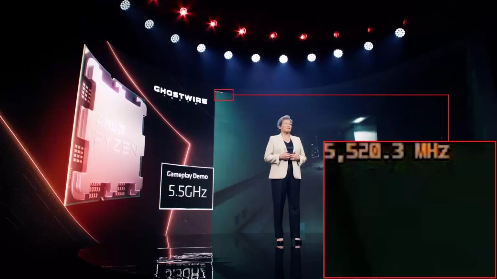
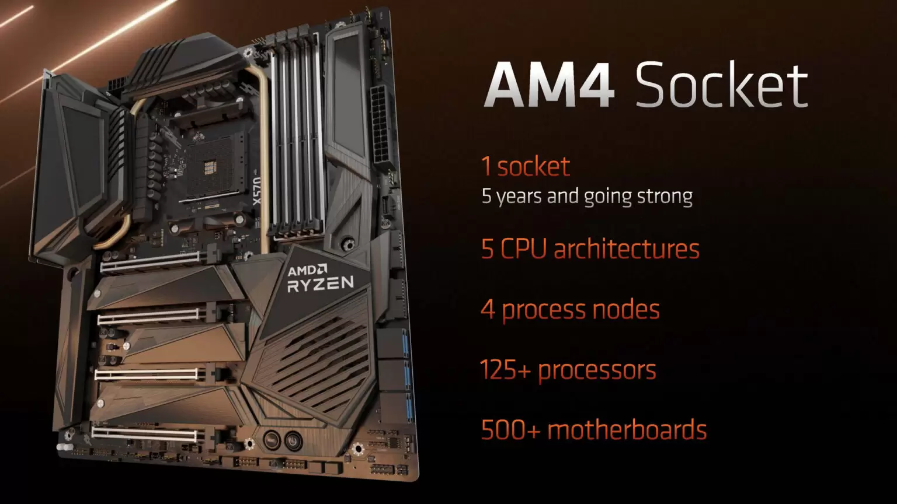

Teaser AMD Ryzen 7000-series : Zen4 5nm, CPU 5.5Ghz+, Socket AM5 LGA1718, Chipset X670, DDR5-6000, PCIe Gen5
point :
Pada ajang Computex 2022, AMD memberikan sebuah keynote berisikan sejumlah update seputar produk dan teknologi terbaru mereka. Salah satu yang paling ditunggu tentunya adalah berbagai detail terbaru seputar prosesor next-gen dari AMD : Ryzen 7000-series. Berikut ini beberapa update terbaru seputar prosesor yang dikabarkan memiliki codename ‘Raphael’ tersebut.
CPU ‘Zen4’ 5nm, Socket AM5, Hanya DDR5
Seperti yang pernah disebut pada pengumuman CES 2022 lalu, Ryzen 7000-series akan memiliki beberapa pembaruan yang signifikan. Arsitektur CPU-nya adalah ‘Zen4‘, menggunakan fabrikasi 5nm TSMC. Socket-nya akan berganti dari AM4 yang ada sekarang, menjadi LGA1718 atau akan dikenal sebagai AM5. Tentunya platform baru ini akan juga mendukung standar RAM dan interkoneksi terbaru: RAM DDR5, dan PCIe Gen5. Secara spesifik, AMD menyebutkan bahwa Ryzen 7000-series hanya akan ditawarkan dengan konfigurasi RAM DDR5.
Penggunaan DDR5-only ini terjadi karena prosesor Ryzen 7000-series nampaknya tidak dilengkapi memory controller DDR4. Jadi, berbeda dengan Intel Core 12th Gen Alder Lake yang mendukung beberapa standar RAM seperti DDR4 dan DDR5, AMD Ryzen 7000-series hanya akan mendukung DDR5.
5nm Core Chiplet Die (CCD) + 6nm I/O Die(IOD) – RDNA2 Terintegrasi di IOD
Desain fisik dari Ryzen 7000 series ini dibuat mirip dengan generasi Ryzen 3000/5000 sebelumnya, dimana AMD menggabungkan Core chiplet die (CCD) dengan I/O-die (IOD) dengan fabrikasi berbeda. CCD akan berisi CPU Core yang dibuat di fabrikasi 5nm, sedangkan IOD akan berisi berbagai komponen Input-output seperti PCIe Controller, Memory controller dan sebagainya. IOD ini difabrikasi di 6nm. AMD menyebutkan bahwa Ryzen 7000-series akan memiliki konfigurasi hingga 16-core, jadi dalam 1(satu) CCD-nya akan berisi 8-Core CPU, tidak berbeda dari Ryzen 5000-series ‘Vermeer’.
Selain PCIe Controller next-gen untuk mendukung PCie Gen5, dan juga memory controller DDR5 yang baru, kali ini ada Integrated Graphics (IGP) berbasis RDNA2 di dalam Ryzen 7000-series. Ini adalah pertamakalinya Ryzen yang bukan G-series (a.k.a ‘APU’) mendapat IGP. Sejauh ini belum ada detail lebih jauh mengenai konfigurasi seberapa besar Compute Unit (CU) dan juga clockspeed dari IGP RDNA2-nya. Melihat dimensi IOD-nya, nampaknya ini bukan GPU RDNA2 sebesar 6 sampai 12 Compute Unit seperti yang ditemukan pada Ryzen 6000-series ‘Rembrandt’, jadi nampaknya IGP ini akan menjadi solusi untuk menampilkan display, bukan integrated graphics kelas gaming.
Zen4 : High Clockspeed, 5Ghz+
AMD belum memberikan detail secara spesifik mengenai arsitektur Zen4, terutama seputar instruction-per-cycle (IPC). AMD hanya menyebutkan bahwa jumlah L2 Cache per core akan ditingkatkan dua kali lipat dari 512 kB per core, menjadi 1MB per core. Lalu AMD juga menyebutkan adanya beberapa instruksi tambahan untuk memproses kalkulasi AI. Yang juga menjadi highlight di sini adalah desain clockspeed tinggi di atas 5 Ghz, dan performa single threaded yang meningkat 15% (pada benchmark Cinebench R23 Single-Core jika dibandingkan Ryzen 9 5950X).
Mari kita lihat lebih dekat :
Demo Clockspeed 5.5Ghz
Dr. Lisa Su memberikan sebuah demo singkat pada sebuah pre-production silicon dari Ryzen 7000-series versi 16-core, dan menunjukkan bahwa pada sebuah gameplay dari game Ghostwire : Tokyo, prosesor Zen4 tersebut berjalan pada clock di kisaran 5.5Ghz!
Kecepatan 5.5Ghz di atas bisa jadi merupakan batas atas single-core turbo dari Ryzen 7000-series ini dan BUKAN kecepatan saat all-core load, namun kecepatan seperti 5.5Ghz ini merupakan nilai yang sangat tinggi bagi standar sekarang, sekitar 12% lebih tinggi dari rated Max turbo Ryzen 9 5950X. Kita juga mungkin ingat bahwa saat ini hanya ada satu prosesor lagi di Dunia yang menawarkan clockspeed serupa, yakni Core i9-12900KS dengan batas atas 5.5Ghz. Dari sisi clockspeed, jelas ini akan menjadi prosesor Ryzen dengan clockspeed terkencang yang pernah dirilis.
Motherboard AM5 – Dukung TDP Lebih tinggi dan interkoneksi Next-Gen
Setelah lama menggunakan socket AM4 yang berupa micro-PGA 1331-pin, sekarang AMD akan menggunakan tipe socket berupa LGA(Land Grid Array) 1718-pin, socket ini akan disebut socket AM5. Socket ini akan mendukung prosesor dengan power/TDP lebih tinggi, dan tentunya mendukung standar RAM baru seperti DDR5 dan interkoneksi next-gen seperti PCIe Gen5. Walaupun bentuk fisik socketnya berbeda, yang perlu dicatat disini adalah lubang mounting cooler untuk AM5 akan sama dengan AM4, sehingga Anda yang memiliki cooler AM4 masih dapat menggunakannya.
170W – TDP atau PPT?
AMD sendiri menyebutkan ‘support up to 170W‘ sebagai penanda bahwa rating power atau TDP dari Zen4 akan lebih tinggi dari generasi sebelumnya. Sayangnya, saat artikel ini rilis, kami belum mendapat klarifikasi lebih jelas untuk angka 170W ini, apakah ini merupakan rating ‘TDP’? Atau merupakan nilai ‘Package Power Tracking’ (PPT) pada sensor daya CPU. Sebagai gambaran, nilai ‘TDP’ dari Ryzen 9 5950X adalah ‘105W’, namun nilai PPT yang dibaca di sensor daya adalah ‘142W’. Jika Ryzen 7000-series ini memiliki TDP 170W, ini berarti PPT-nya akan jauh lebih tinggi melebihi 200W. Sedangkan, jika nilai 170W ini adalah nilai ‘PPT’, berarti Ryzen 7000-series termasuk hemat daya untuk sebuah prosesor dengan karakteristik clockspeed tinggi.
Lane PCIe cukup banyak: 24-lane PCIe Gen 5
Ada berbagai pilihan ekspansi yang cukup melimpah dari prosesor Zen4, prosesornya memiliki total 24 PCIe lane yang kompatibel dengan standar PCIe Gen5. Karena ada integrated graphics RDNA2, ada total 4(empat) buah HDMI 2.1 atau DisplayPort 2. Kami sempat juga melihat ada spesifikasi motherboard AM5 yang akan memberikan display output dari USB-C dengan DisplayPort Passthrough (DP over USB-C). Tersedia dukungan hingga 14-port USB-C dengan kecepatan 20 Gbps, dan juga dukungan Wifi 6E. Perlu dicatat, konfigurasi jumlah USB port (dan kapabilitas USB-C seperti USB Power Delivery), ekspansi Wifi, serta pastinya Display output, akan sangat ditentukan motherboard.
Motherboard AM5 Chipset 600-series : X670E, X670, dan B650
Untuk motherboard AM5, AMD saat ini mengumumkan 3(tiga) tipe chipset, yakni X670 Extreme, X670, dan B650. Seri teratas ditempati chipset X670 Extreme (X670E). Ini adalah pertamakalinya AMD memberikan akhiran ‘Extreme’ ke sebuah chipset, karena di generasi lalu hal ini tidak ditemukan. AMD memberikan konfirmasi bahwa baik AMD X670E, X670, dan B650 akan memiliki dukungan overclocking prosesor. Ketiga chipset ini nampak akan memiliki perbedaan dari sisi ekspansi, terutama pada dukungan PCIe Gen5.
AM4 : Masih hidup!
Setelah AM5 hadir, bagaimana nasib AM4?
Tidak perlu kuatir, Lisa Su menyebutkan di stage saat Computex 2022 keynote : “AM4 is a great platform that will continue for many years to come”, menandakan bahwa AM4 nampak akan ditawarkan berbarengan dengan AM5 dan belum masuk ke fase end-of-life.
AMD sendiri memberikan statement sebagai berikut :
“We see AM4 as an important part of our product portfolio both now and into the foreseeable future”
Blender Demo : Ryzen 7000-series 16-core mengalahkan Core i9-12900K
Untuk sedikit teaser performa, AMD menunjukkan demo rendering dengan Blender CPU rendering, dimana sebuah pre-production silicon dari AMD Ryzen 7000-series 16-core, mampu mengalahkan sebuah Core i9-12900K ‘Alder Lake’.
Dari footnote yang diberikan AMD, Ryzen 7000-series 16-core menyelesaikan tugasnya dalam 204 detik, sedangkan Intel 12900K mengerjakan tugas yang sama dalam 297 detik , berarti waktu yang dibutuhkan oleh Ryzen 7000-seriesnya lebih singkat sekitar 31%.
Bagaimana dengean kecepatan DDR5?
AMD tidak menyebutkan secara resmi mengenai kemampuan pencapaian clockspeed DDR5 pada Zen4, namun dari footnote yang ada pada press deck, AMD menyebutkan nilai DDR5-6000CL30 ke atas. Belum diketahui apakah ini nilai batas atasnya, atau masih ada headroom overclocking jauh melebihi nilai ini.